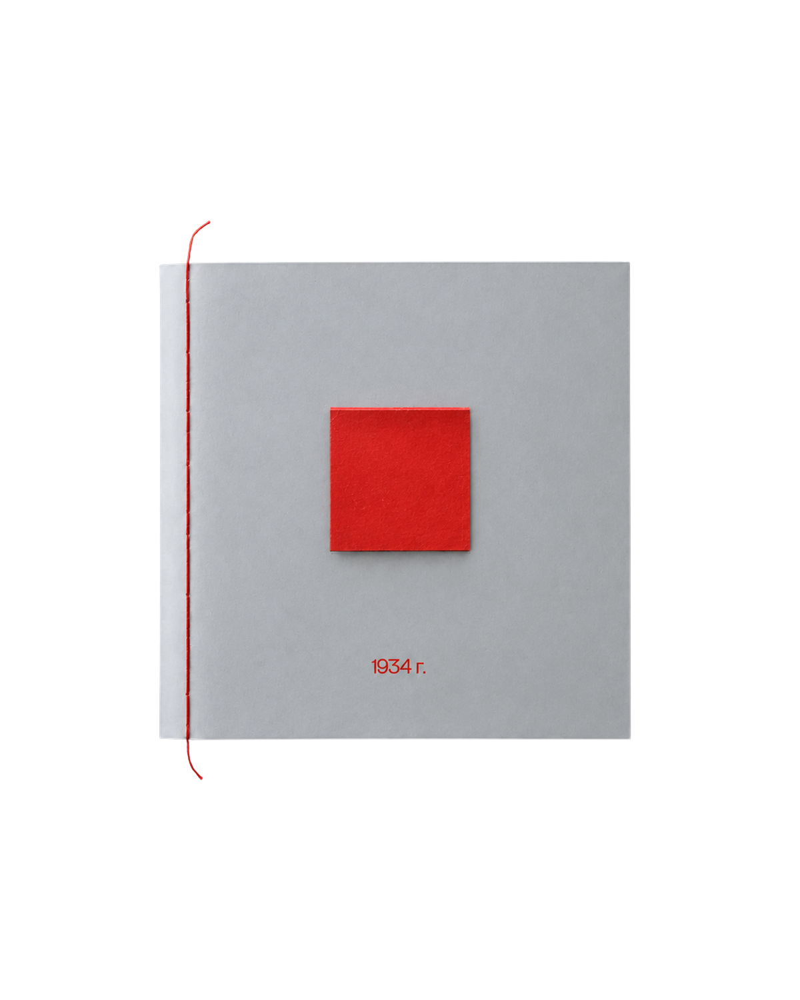
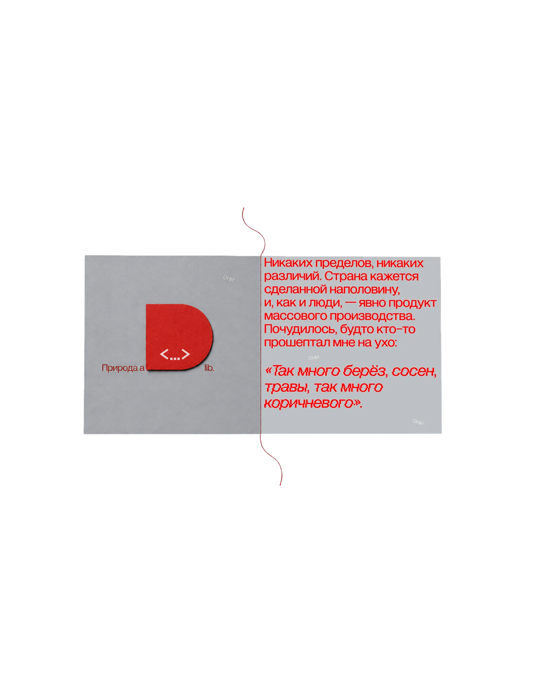
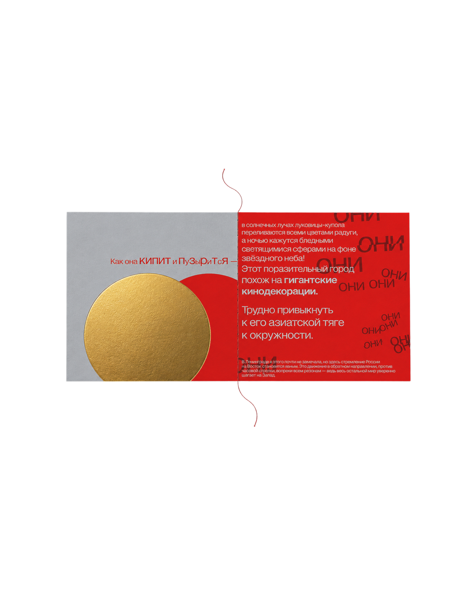
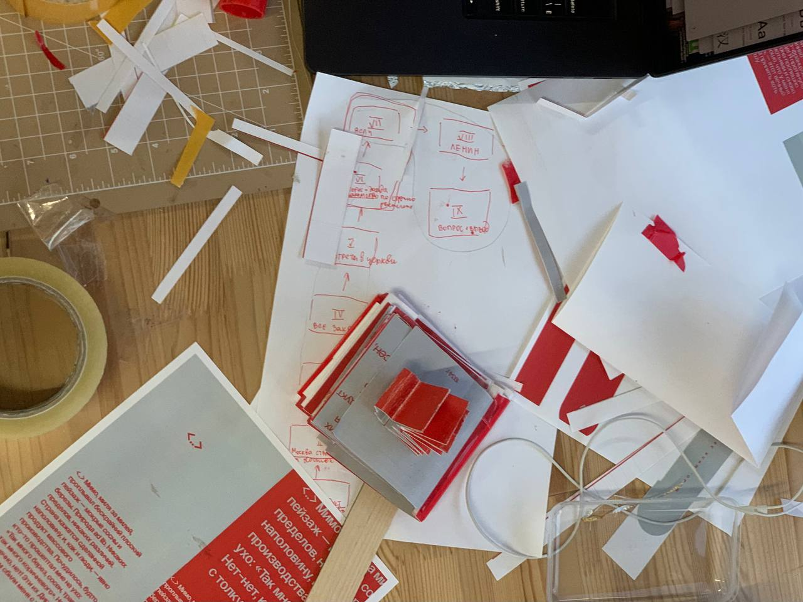
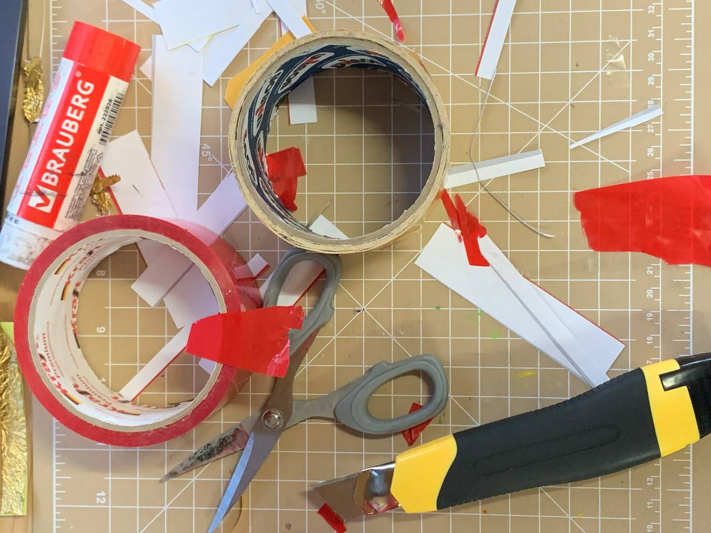
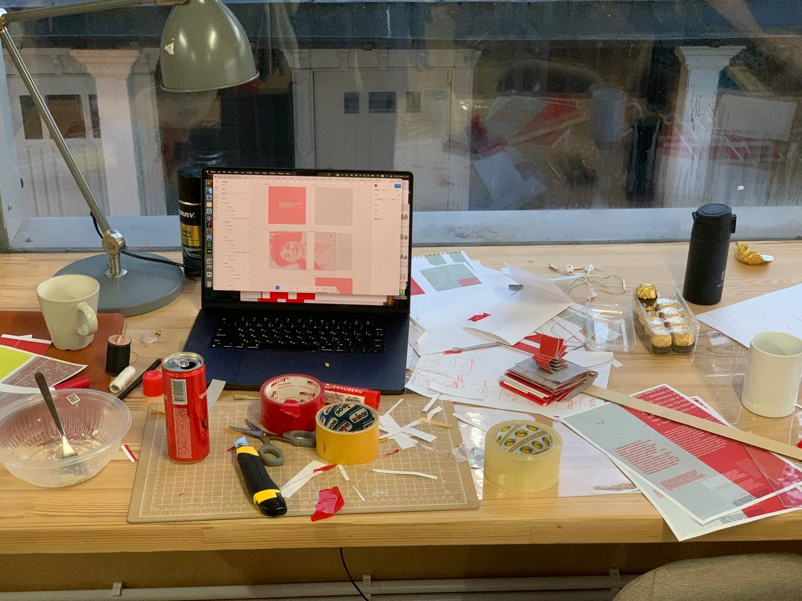
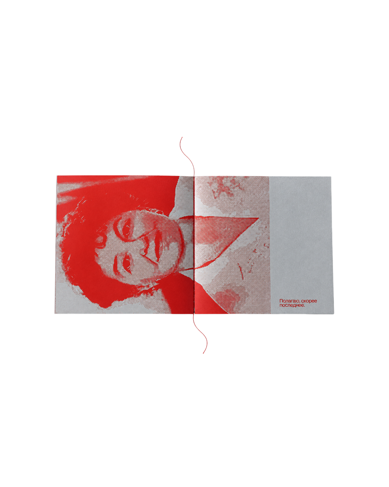
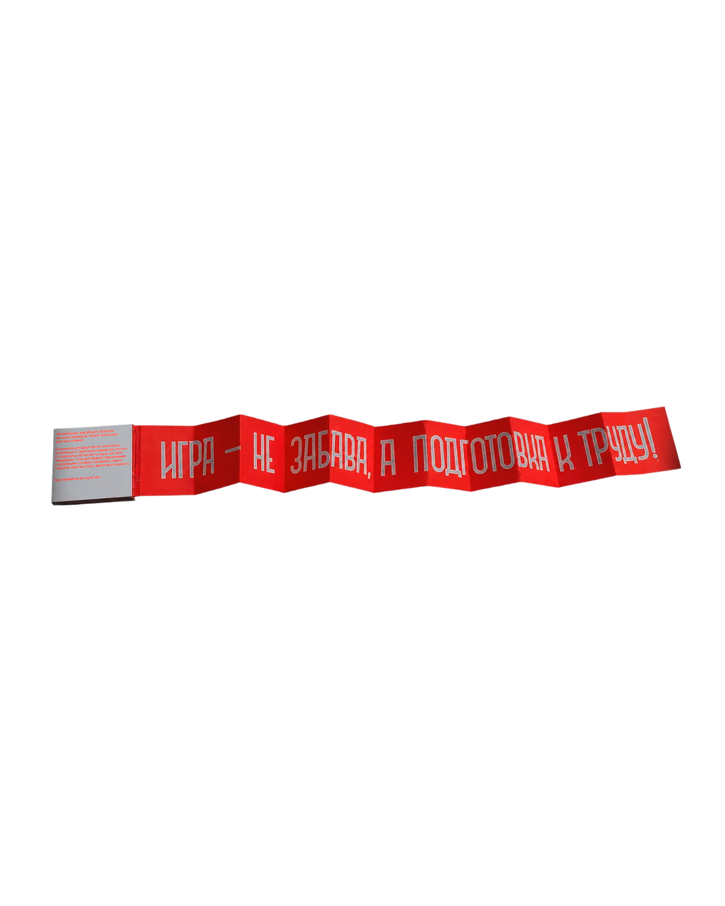

Разобрать
Выбрать текст, разметить его повторы, действия, интонации и смысловые ударения.
Campus DesignWorkout · Do you read me?
Экспериментальный зин по путевым заметкам Памелы Трэверс, в котором текст управляет не только взглядом, но и руками читателя.
Пойдёмте! ↓
Задача воркшопа
Выбрать текст, разметить его повторы, действия, интонации и смысловые ударения.
Перевести найденный ритм в последовательность страниц, клапанов, окон и разворотов.
Сначала прочитать
Памела Трэверс
«Московская экскурсия»
1934
Меня зацепила не фабула, а густота описания. Серый пейзаж, сверкающие купола, мифические ОНИ, приказной голос гида — в тексте уже были цвет, движение и монтаж.
Я сама пишу, поэтому искала текст, в котором важен не только сюжет, но и способ описания. Я читала его как визуальную партитуру: искала места, где сама фраза подсказывает длину, паузу, препятствие или жест.
Разобрать до слов
Исходный фрагмент — ещё без готовой идеи и визуальной иерархии.
Найденная идея
Героиню постоянно направляют, торопят и не пускают туда, куда она хочет попасть. Зин берёт на себя ту же роль: заставляет читателя тянуть, возвращать, приоткрывать и пробираться внутрь.
Драматургия издания
Фраза «миля за милей» становится длинной полосой, которую нужно вытащить и снова свернуть.
Круг связывает пузырь, солнце, луковичный купол и взгляд России на Восток.
Повтор сначала едва заметен, затем становится громче, теснее и агрессивнее.
Текст сужается до стены. В церковь приходится проникать через маленькую прорезь.
Детский плакат разворачивается далеко за пределы книги и буквально захватывает пространство.
Растровый портрет напоминает: вся увиденная Россия существует здесь через оптику Памелы.

Не иллюстрировать — режиссировать
Он видит только то, что ему открыли, и движется в заданном порядке. Издание не сопровождает рассказ картинками — оно воспроизводит его давление, запреты и внезапные открытия.
Визуальная система
Плоский пейзаж, тусклая Россия и воздух между событиями.
Любопытство Памелы, напряжение, команда и наступающие «ОНИ».
Единственное исключение из двухцветной системы — горячее фольгирование. Оно появляется там, где купола вспыхивают в солнечных лучах.

Самая длинная фраза — самая длинная деталь
В интерфейсе — горизонтальный скролл.
В зине — бумажная гармошка.
День 2 · Ручная проверка
Мне нужно было проверить не красоту отдельного разворота, а весь маршрут: что человек увидит первым, куда потянется, где остановится и сможет ли вернуться назад.
Вместо аккуратного макета появился прототип, собранный тяп-ляп из скотча, клея и конфетной фольги.
01 · Маршрут
Разложила текст на эпизоды и для каждого записала не будущий визуальный приём, а действие читателя: открыть окно, вытянуть полосу, завернуть её обратно, приподнять клапан, протиснуться в щель.
Так стала видна драматургия. Героиню всё время ведут, торопят и куда-то не пускают — значит, и книга должна не просто показывать страницы, а управлять движением рук.

02 · Сборка
На экране легко поверить, что длинная полоса вытянется, клапан откроется, а текст останется читаемым. Бумага быстро показывает правду: где не хватает запаса, что цепляется за сгиб и какой жест получился слишком сложным.
Я резала и переклеивала детали прямо по ходу. Часть решений упростилась, зато каждое оставшееся действие стало ясным и связанным с конкретной фразой.

03 · Первый экземпляр
Обычный принтер съел края, поэтому текст оказался буквально покусан со всех сторон. Детали держались на черновых креплениях, а горячее фольгирование на время заменили фантики от Ferrero Rocher.
Я не пыталась выдать этот экземпляр за готовую вещь. Его задача была честнее: проверить порядок, масштаб и то, выдерживает ли вся конструкция чтение от первой страницы до последней.

04 · Что подтвердилось
Длинная гармошка вторгается в пространство, как идеологический плакат. Узкая щель заставляет буквально пробраться внутрь церкви. Повторяющиеся «ОНИ» всё сильнее давят на страницу, а портрет Памелы в конце возвращает нас к её субъективному взгляду.
После этой сборки стало понятно, что нужно переносить в чистовую версию без изменений, а где материалу не хватает точности, ровного обреза и настоящей фольги.

Чистовая версия
Квадратный блок, ровный обрез и одна красная прошивка по центральному сгибу — с интонацией архивного договора.
Внутри сохраняется ручной характер: клапаны, прорези, гармошки и свободные концы нитей. Но теперь каждый приём выглядит намеренным и работает на рассказ.


Итог
Механика здесь — не эффект, а способ чтения.
Клапаны останавливают и перенаправляют взгляд, прорези заставляют протискиваться внутрь, гармошка требует вытянуть фразу руками. Чтение становится последовательностью физических действий — так зин повторяет давление, запреты и движение внутри рассказа.